Interview Stage 2 Work with GPT
For an interview prep focused on a case study related to train signaling, it's crucial to approach the topic with both technical knowledge and strategic thinking. Here’s a structured way to prepare:
Use the bloom to remember visualise it to prepare
-
gpt
-
google images
1. Understand the Basics of Train Signaling
Concepts to Review:
- Signal Types: Learn about different types of signals like semaphore, color light, and digital signals.
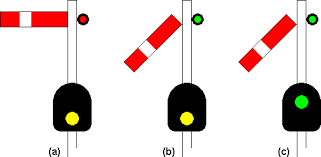
- Signal Functions: Understand the primary functions such as speed regulation, collision prevention, and route selection.
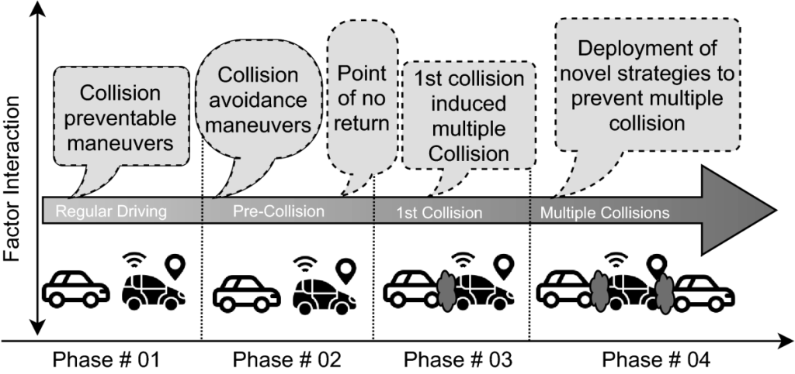
- Technological Foundations: Familiarize yourself with the technology behind signaling systems like track circuitry, interlocking, and automated control systems.
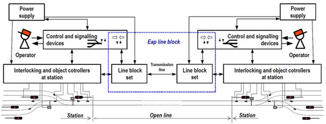
2. Key Issues and Challenges in Train Signaling
Areas to Focus:
- Safety Concerns: Explore case studies where signal failures have led to accidents or near misses.
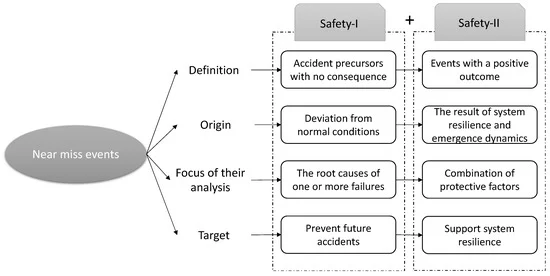
- Technological Upgrades: Review modern advancements like the European Train Control System (ETCS) or Positive Train Control (PTC) in the U.S.
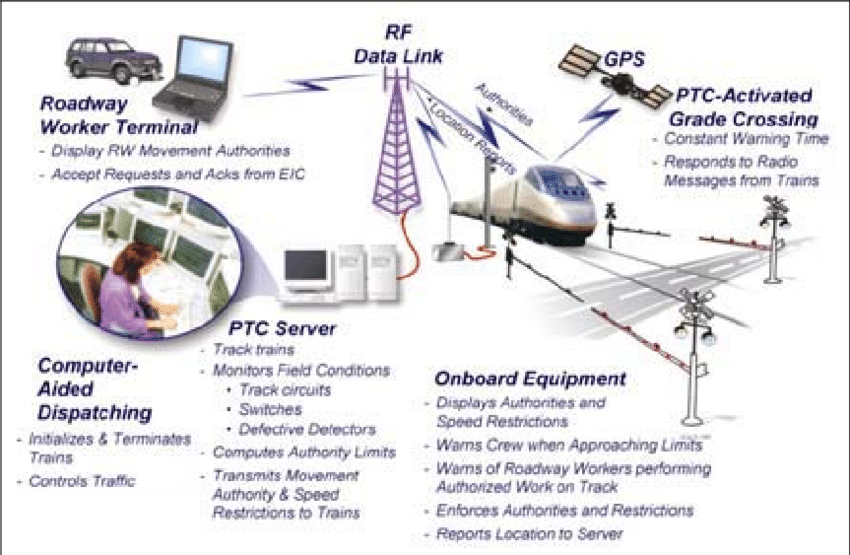
- Integration Challenges: Understand the difficulties in integrating new signaling systems with old infrastructure.
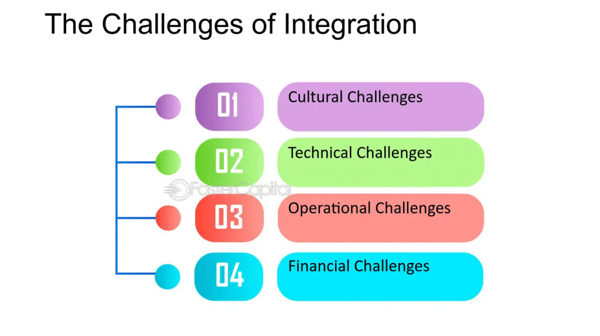
3. Recent Developments and Innovations
What to Study:
- Digital Signaling: Research how digital systems are replacing traditional mechanical signals.
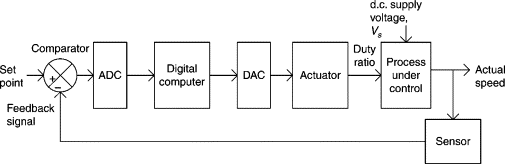
- Autonomous Trains: Learn about how signaling technology is evolving with the advent of driverless trains.
- Sustainability Initiatives: Find examples of how signaling technology is helping to reduce energy use and increase efficiency.
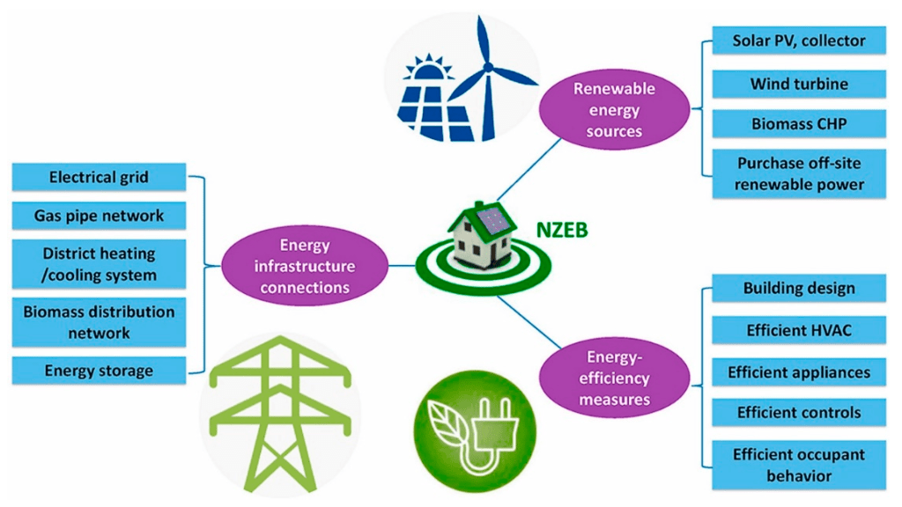
4. Regulatory and Legal Framework
Key Points:
- National and International Regulations: Study the regulations governing train signaling in different regions (e.g., FRA regulations in the U.S., ERA guidelines in Europe).
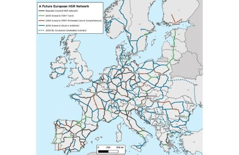
- Compliance and Standards: Look into the standards train signaling systems must meet to ensure safety and interoperability.
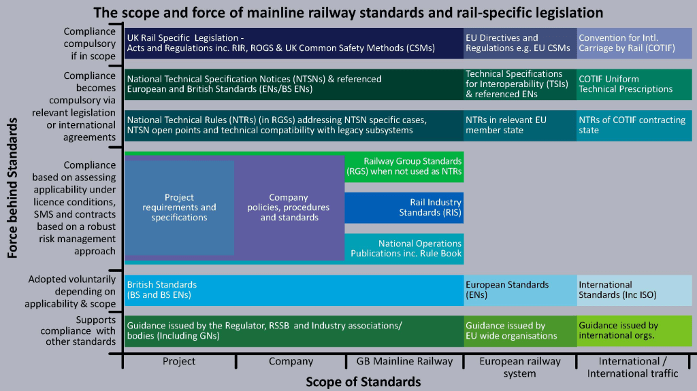
5. Case Studies
Prepare by Analyzing:
- Success Stories: Examine instances where the implementation of new signaling technology has markedly improved efficiency and safety.
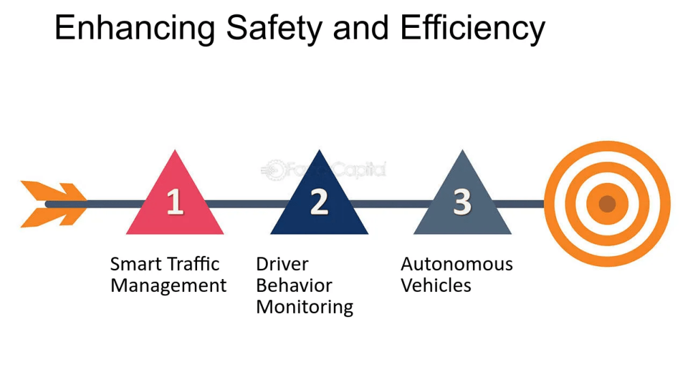
- Failure Analysis: Understand cases where signaling failures led to disruptions or accidents, and what lessons were learned.
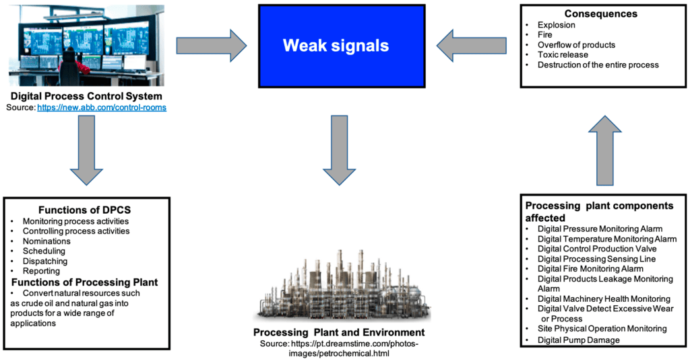
6. Interview Simulation
Practice Questions:
-
Technical: Describe how a track circuit works and its role in train signaling.
-
Scenario-Based: How would you handle a situation where a signaling system fails during peak hours?
-
Problem-Solving: Given limited budget, how would you prioritize upgrades to an aging signaling system?
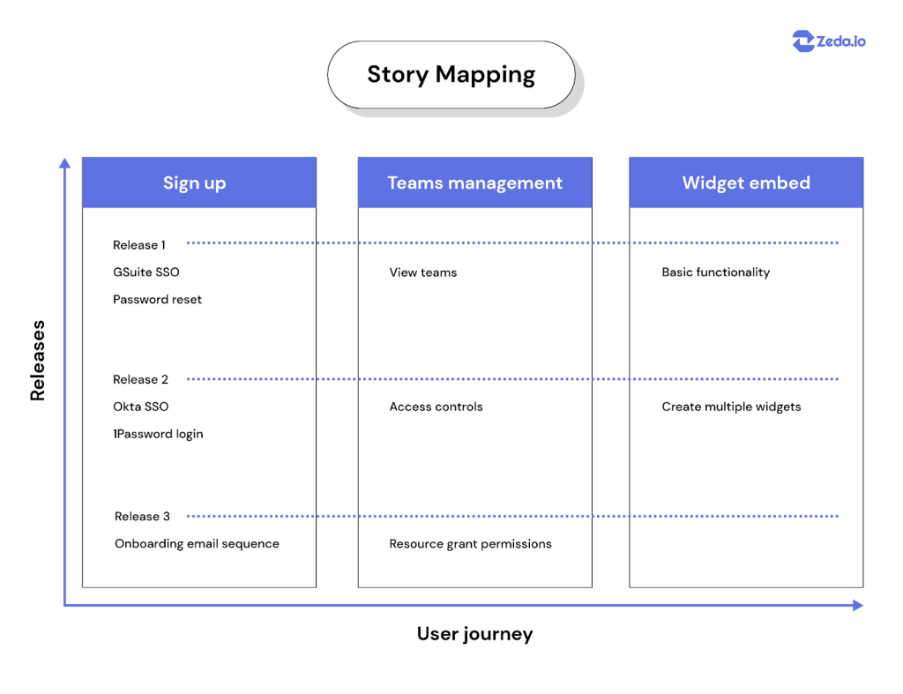
- Behavioral: Can you share an experience where you successfully implemented a technology solution under tight deadlines?
7. Technical Demonstrations or Practical Tasks
Prepare to Show:
-
Diagrams and Schematics: Be ready to sketch or explain signaling layouts.
-
Simulations: If possible, use software simulations to demonstrate how you would manage and optimize train movement in real-time.
8. Final Preparation
-
Review Industry Publications: Stay updated with the latest news in railway technology by reading journals and attending webinars.
-
Mock Interviews: Conduct mock interviews with peers or mentors to build confidence and receive feedback.
Preparing for a case study interview in train signaling requires a blend of technical knowledge, analytical skills, and an understanding of the broader transportation context. Make sure you're also prepared to discuss how your background and experiences align with the challenges and responsibilities of the role you're applying for.
Imported from rifaterdemsahin.com · 2024